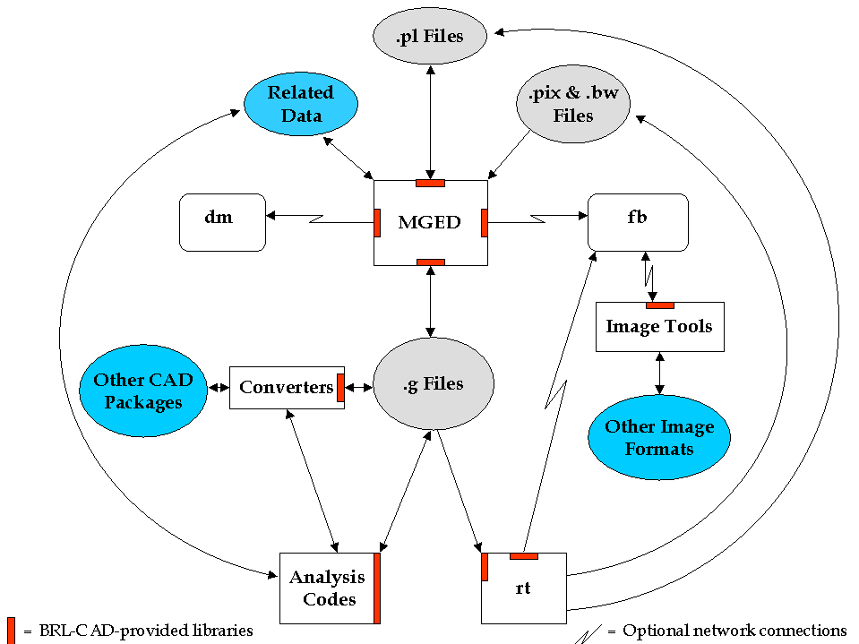
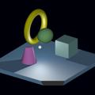
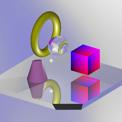
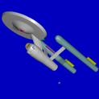
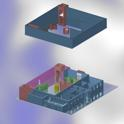
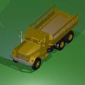
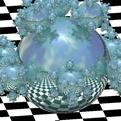

What is BRL-CAD?
Since the late 1950s, computers have been used to assist with the design and study of combat vehicle systems. The result has been a reduction in the amount of time and money required to take a system from the drawing board to full-scale production as well as increased efficiency in testing and evaluation.
In 1979, the U.S. Army Ballistic Research Laboratory (BRL) (now the U.S. Army Research Laboratory [ARL]) expressed a need for tools that could assist with the computer simulation and engineering analysis of combat vehicle systems and environments. When no existing computer-aided design (CAD) package was found to be adequate for this purpose, BRL software developers began assembling a suite of utilities capable of interactively displaying, editing, and interrogating geometric models. This suite became known as BRL-CAD.
Now comprising almost a million lines of C code, BRL-CAD has become a powerful constructive solid geometry (CSG) modeling package that has been licensed at over 2,000 sites throughout the world. It contains a large collection of tools, utilities, and libraries including an interactive geometry editor, raytracing and generic framebuffer libraries, a network-distributed image-processing and signal-processing capability, and a customizable embedded scripting language. In addition, BRL-CAD simultaneously supports dual interaction methods, one using a command line and one using a graphical user interface (GUI).
A particular strength of the package lies in its ability to build and analyze realistic models of complex objects using a relatively small set of "primitive shapes." To do this, the shapes are manipulated by employing the basic Boolean operations of union, subtraction, and intersection. Another strength of the package is the speed of its raytracer, which is one of the fastest in existence. Finally, BRL-CAD users can accurately model objects on scales ranging from the subatomic through the galactic and get "all the details, all the time."
Why CSG Modeling?
Although BRL-CAD has been used for a wide variety of engineering and graphics applications, the package’s primary purpose continues to be the support of (1) ballistic and (2) electromagnetic analyses. Accordingly, developers have found CSG modeling to be the best approach in terms of model accuracy, storage efficiency, precision, and speed of computational analysis.
While polygonal and boundary representation (B-rep) modeling often focuses on just the surfaces of objects, CSG modeling focuses on the entire volume and content of objects. This gives BRL-CAD the capability to be "more than skin deep" and build objects with real-world materials, densities, and thicknesses so that analysts can study physical phenomena such as ballistic penetration and thermal, radiative, neutron, and other types of transport.
Package Content
In keeping with the UNIX philosophy of developing independent tools to perform single, specific tasks and then linking the tools together in a package, BRL-CAD is basically a collection of libraries, tools, and utilities that work together to create, raytrace, and interrogate geometry and manipulate files and data. The basic data flow structure of the package is illustrated below.

Libraries
The BRL-CAD libraries (designated by the prefix "lib") are designed primarily for the geometric modeler who also wants to tinker with software and, perhaps, design custom tools. Each library fits into one of three categories: (1) creating and/or editing geometry, (2) raytracing geometry, or (3) image handling. The following is a list of the major BRL-CAD libraries and descriptions of their functions.
-
libbu - a basic utility (bu) library containing fundamental computer science types of routines, including manipulating data (e.g., converting from host format data to network format data), parallel processing, parsing parameters, handling variable-length strings, performing error checks, converting units from one format to another, manipulating bit vectors, running parallel-safe versions of input/output (I/O) routines, and maintaining symbol tables.
-
libbn - a library of routines to support basic numerical (bn) handling, including 2-D/3-D vector, matrix, and quaternion manipulation; 3-D plotting support; automatic inference of image size (BRL-CAD images have no internal header; image dimensions are intuited from the size of the file); and wavelet decomposition and reconstruction, etc.
-
libdm - BRL-CAD’s primary graphics display manager (dm) library. It handles opening windows onto the display and displaying geometry in the graphics window, etc.
-
libfb - the framebuffer (fb) library, which supports having a window in which the user puts pixel data when raytracing.
-
liboptical - the shader and texturing library for the raytracer.
-
libpkg - a library that implements a remote procedure call (rpc) mechanism. This library is a predecessor of the modern rpc system. Unlike the typical UNIX rpc service, applications can set up services and handle requests without requiring configuration by a system administrator.
-
librt - the library that contains all of the geometry support, including data representations for the primitives, support for raytracing (rt), and binary I/O support for CSG geometric descriptions.
-
libz - a public-domain compression library.
-
libtcl, libtk, and libitcl - libraries that provide the Tcl/Tk scripting language.
-
libpng - a library that provides portable network graphics (png).
Tools and Utilities
The application side of BRL-CAD also offers a number of tools and utilities. They primarily concern (1) geometric conversion, (2) geometric interrogation, (3) image format conversion, and (4) command-line-oriented image manipulation. The following is a list of the major BRL-CAD tools and utilities.
-
MGED (Multiple-Device Geometry Editor) - BRL-CAD’s graphics editor. (For detailed guidance on the use of MGED as well as a list of all the MGED commands currently available, see Butler et al. [2001].)
-
Tools for raytracing and interrogating raytraced geometric objects.
-
rt - the main raytracer for rendering images in BRL-CAD.
-
nirt - a package for firing rays interactively and getting information about what the rays run into.
-
remrt - a network-distributed raytracing package.
-
An assortment of geometric converters to convert to and/or from other geometry formats, including Euclid, ACAD, AutoCAD DXF, TANKILL, Wavefront OBJ, Pro/ENGINEER, JACK (the human factors model for doing workload/usability studies), Viewpoint Data Lab, NASTRAN, Digital Equipment’s Object File Format (OFF), Virtual Reality Mark-up Language (VRML), Stereo Lithography (STL), Cyberware Digitizer data, and FASTGEN4.
-
bwish - a Tcl/Tk interpreter in a windowing shell with enhancements compiled into it for accessing BRL-CAD libraries. It also includes various other extensions to the Tcl language.
-
irprep - produces input to the PRISM (Physically Realistic Infrared Simulation Model) code.
-
JOVE (Jonathan’s Own Version of Emacs) - a fast, light implementation of Emacs.
-
Applications for displaying images of various types on the framebuffer application and retrieving data from that framebuffer into images of various types.
-
Tools for generating geometry for common objects such as fences, walls, and geometric mathematical oddities (e.g., the sphereflake shown in Figure 2 in Section 4).
-
Data manipulation programs to (1) convert integers to floats, floats to doubles, etc. (e.g., cv); (2) perform mathematical operations on file elements (e.g., imod, umod, and dmod); (3) compute statistics of file elements (e.g., istat, ustat, and dstat); etc.
-
Utilities for building animation scripts - keeping track of columnar data and interpolating it to allow one to produce input to the rt program to render multiple items for animation.
-
Utah Raster Tool Kit - image manipulation of all RLE-based images.
-
Programs for manipulating images and converting between different image file types. The two primary BRL-CAD types are pix (24-bit red, green, and blue [RGB] color images) and bw (8-bit grayscale images). Converters exist for various image formats including alias, png, ppm, etc.
-
Programs for filtering images, doing histograms on the image data, and extracting rectangles from the images.
-
Tools for combining two images and blending them together. (These tools were created before good image editing tools for video production were available; today users would typically load the images directly into a video editing package.)
Benchmark Testing
As changes are implemented in BRL-CAD, ARL developers run a standard set of computationally intensive image files (shown in Figure 2) on a common machine in order to benchmark and compare raytrace performance. In addition, these images are provided with each source distribution of the package so that users can also test performance on their machines, if desired.
To run the benchmark images, run the script run.sh in the "bench" directory of the source directory tree.
 |
 |
 |
Moss |
World |
Star |
 |
 |
 |
Bldg 391 |
M35 |
Sphflake |
Acknowledgments
The authors would like to thank the members of the Advanced Computer Systems Team, who reviewed this document in a timely manner and made many helpful suggestions to improve its accuracy and presentation. At the time this document was prepared team members included John Anderson, TraNese Christy, Bob Parker, Ron Bowers, and Sean Morrison.
In addition, the authors would like to especially acknowledge Mike Muuss, a team member and the original architect of BRL-CAD, who passed away in the fall of 2000. Without his vision, this work would not have been possible. Therefore, the BRL-CAD Tutorial Series is dedicated to his memory.